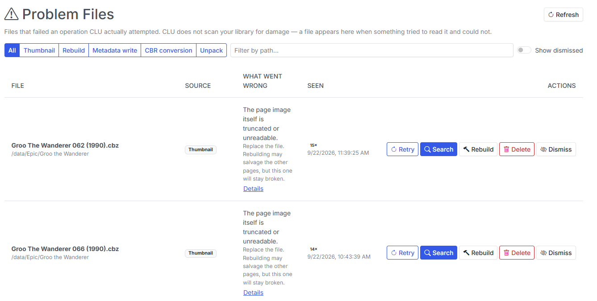

v7.0 - Guided Setup, Problem Files, & a Settings Overhaul
v7.0 is the biggest release in a while, and most of it is about two moments: the first ten minutes of a new install, and existing users wondering if they have everything setup correctly.
Guided Setup is the main reason for the v7 bump. It's a walkthrough that checks your install, asks how you plan to use CLU, and shows you only the settings you need. Underneath it, I rebuilt how CLU stores its settings. The old config.ini is gone, Folder Monitoring is now controlled by a switch in the UI instead of an environment variable, and your library no longer has to live at /data. Problem Files also grew into a full library health tool, with a rolling scan, duplicate review, and a way to salvage CRC-damaged comics.
With the release, we are moving to Auth Token ONLY for Metron. v6 supported the original Username/Password and enabled Auth Token as a fallback. In v7, Auth Token is the only option for Metron. The existing Username/Password login in the UI has been removed. Visit Metron --> Account --> API Tokens to generate yours.
Guided Setup
The most common support question I get isn't about a feature. It's "I installed it, now what?" CLU started out as a few hand-coded scripts and has grown into a multi-feature comic management tool, and I realized that it's not always obvious how to get started. Guided Setup is meant walk users through setting CLU up step by step.

When it shows up:
- New install: the owner's first visit to the home page opens Guided Setup, once.
- Upgraded install: nothing redirects you. You get a one-time banner offering to run it, and you can dismiss it.
- Any time after that: use Run Guided Setup on the Settings page, or gear menu → Guided Setup.
Step 1: System Check
Guided Setup starts by checking your install without changing anything. It covers the database, whether /config is on storage that's safe for SQLite (not a CIFS/NFS share), whether /config and /cache are writable, which folders are mapped under /data, whether WATCH and TARGET are outside your library, whether each library can be read and written, and whether the container runs as your PUID rather than root.

Every row says how to fix what it found. Only a failed Database check stops you from continuing. Everything else is a warning you can come back to. Each check gives up after 5 seconds, so a sleeping NAS can't hang the page.
The same checks are now on a System Check tab on the Logs page, and they're included in the debug package as preflight.json. If you ask for help on Discord, attaching that file will usually save us a round of questions.
Step 2: How do you plan to use CLU?
This question decides which steps you see. Starting fresh gets you every section in order, and you can skip any of them. If you already have comics in folders, pick as many of these as apply:
| Use case | Sections it adds |
|---|---|
| Repair and fix my existing collection | Libraries, Folder Monitoring, Notifications, Library Health |
| Add or update metadata | Libraries, Metadata |
| Import from Mylar3 | Libraries, Metadata, Mylar3 Import, Downloads |
| Map existing folders to my pull list | Libraries, Metadata, Pull List Scan |
| Subscribe and download comics | Libraries, Metadata, Folder Monitoring, Downloads, Schedules, Users, Notifications |
| Read my comics and track stats | Libraries, Users |
Each step explains what the section does, shows the fields that matter, and links to the full Settings tab for everything else. Every step saves as you go. There's no "save everything" button at the end to forget. Libraries lists the folders the System Check found, each with a one-click Add as library. Downloads only enables Save after a client or indexer passes a Test.
 |
 |
|---|---|
| Libraries | Downloads |
You can skip a step, leave halfway through, and pick up where you left off. The Summary at the end shows each section as Configured, Needs attention, Not set up or Skipped, and has a Download summary (for support) button.
On an existing install, Guided Setup doubles as a health check. Run it to see what's configured, what's broken, and what you aren't using yet.
Mylar3 users: the new Mylar3 importer is one of the steps. Upload your mylar.db and config.ini, and CLU brings over your watchlist, issue status, download client, indexers and ComicVine key. It also writes the missing cvinfo and series.json files for imported series.
More in the Guided Setup docs.
Under the Hood: Settings, Monitoring, and /data
Guided Setup couldn't work on top of how CLU used to store settings. Some lived in config.ini, some in the database, and Folder Monitoring was an environment variable you could only change by editing your compose file. So before building the wizard, I refactored the foundation.
All settings now live in the database. On first start, v7 imports your config.ini once, renames it to config.ini.migrated, and never reads it again. Any value already stored in the database is left alone. Every part of CLU, including the separate monitor process, now reads settings from one place, so a change in the UI takes effect within a few seconds without a restart.
Folder Monitoring is a live switch. MONITOR=yes used to be read once, when the app started. It's now an Enable Folder Monitoring toggle on the File Processing tab, with a Running / Stopped badge. A small supervisor starts and stops the monitor when you flip it, restarts it if it crashes, and re-points it when you change WATCH. As a side effect, this also fixes duplicate monitors appearing after a worker restart.
Your library doesn't have to be at /data. A user setting their library to /comics broke several views quietly. Multiple places in the code still assumed /data was the root of your library. Some of those failures were visible, like All Books returning errors and Stats showing zero publishers. Others did their damage quietly:
- Moves inside
/comicsnever updated the file index, so wanted issues were never reconciled. - The file watcher only watched
/data. There's now one watcher per library root. - ComicVine auto-move created folders under
/data, which is the container's own disposable storage when/dataisn't mounted. - The trash's empty-folder cleanup only protected
/data, so trashing the last item in another library root could remove the root itself. It now protects every library root, plus WATCH, TARGET and the trash.
All of those are fixed, and a test now fails the build if anyone adds a new hard-coded /data.
Problem Files Becomes Library Health
Problem Files arrived in v6.5 with an honest limitation: it only knew about files CLU had already tripped over. An empty page meant "nothing has failed," not "your library is fine."
v7 adds the other half.

The library health scan
The scan is opt-in and rolling. Each run opens a batch of comics (200 by default, every 6 hours), oldest-checked first, and confirms they can actually be read. A large library is covered over several runs instead of in one long job. The scan also finds:
- damaged archives and bad CRCs
- orphaned files and empty folders
- incomplete or missing
series.json - stray files (TARGET is excluded, because it's supposed to hold files in transit)
- duplicate copies
The Library health card shows two numbers, and they mean different things. Coverage is how much of the library has a current result, so 40% checked means 60% unknown, not 60% healthy. Score starts at 100 and loses points for each problem found.
Salvage rebuild and Edit pages
The old Rebuild button was honest about its odds: a real CRC error aborts extraction, so rebuilding usually failed the same way the original operation did. v7 adds two tools that fix more files:
- Salvage rebuild is for
Bad CRC-32rows. It re-reads each damaged page while ignoring the checksum, and keeps the page only if the image fully decodes. The comic is rewritten only if every damaged page decodes. Otherwise the file is left byte-for-byte untouched, and the row names the page that couldn't be saved. - Edit pages opens the CBZ editor with damaged pages flagged, so you can delete the bad page and keep the rest of the issue. After you save, CLU decodes every page again before it clears the row. Repacking gives the archive fresh CRCs, so a broken page left in place would otherwise look fixed.
When neither works, Find a replacement is still one click away.
Duplicates
The new Duplicates page reviews the groups the scan finds:
- Exact groups are byte-for-byte identical files.
- Likely groups share series, issue and year tags plus a matching filename, or look like
Comic (1).cbznext toComic.cbz. Check these before you trash anything, because a variant cover can match on tags.
CLU pre-selects a copy to keep, preferring one that's undamaged, tagged, a .cbz, larger, and newer, in that order. Compare shows two copies side by side, including image resolution. Keep selected, trash the rest sends the others to the trash, and you can still restore them from there. Dismiss hides a group until the next scan, and Not duplicates hides it for good.
Smaller changes
- Rows show full paths instead of truncating them, and What went wrong gets the extra width.
- The Details button is gone, since the row already shows that information.
- Empty folders delete without a confirmation step. Their leftovers can all be recreated, and the server checks again that the folder is empty before deleting. Deleted rows turn red and fade out, so you can see what went.
- Refresh all series.json from the Problem Files page, with a report of each folder that failed.
Also in v7
- Provider tracking: CLU records which metadata provider tagged each file. You can re-tag with a single provider, or backfill only the blank fields.
- Year breaks ties when moving a download into one of two series with the same name.
- Download fallbacks: when DDL has no results, CLU tries Usenet and DC++. Scheduled runs now report what they searched, queued and missed.
- Metron: mokkari 5.0's moves to token-only auth, and "what changed?" checks no longer come from a stale cache.
- Reading lists match entries by ComicVine id, which fixes misses on titles with colons and variants. The Reading Lists and Pull List pages now load a page at a time on the server.
- Weekly Releases has a Subscription filter next to Publisher.
- New themes: Gruvbox Dark and all four Catppuccin flavors (Latte, Frappé, Macchiato and Mocha).
A big thank-you to @esanchezm, who contributed for the first time this release: the themes, reading-list matching, pagination, and re-queuing thumbnail jobs after a restart.
Security fix — please upgrade
v7.0 fixes an unauthenticated arbitrary file deletion through the /stream endpoint (GHSA-4v7f-qm46-8fw4). If your CLU is reachable by anyone you don't fully trust, upgrade now.
Notes for Upgraders
config.iniis migrated automatically. After the first start you'll seeconfig.ini.migratedin/config. CLU won't read it again, but keep it around until you've confirmed your settings carried over.MONITORis retired. If you hadMONITOR=yes, monitoring stays on. If you never set it, monitoring stays off. That matters if you use Usenet or DC++, because those downloads are processed by the monitor. Turn it on in Settings → File Processing. You can removeMONITORfrom your compose file, and CLU logs a warning while it's still there.- Libraries can live anywhere you map them.
/datais still the default, but/comicsor a second root now works everywhere. - The health scan is off until you turn it on. Do that from Problem Files or from the Library Health step in Guided Setup.
- Guided Setup won't take over an existing install. You'll see a banner once, and that's it.
That's v7.0: a setup that tells you what's wrong before you have to ask, settings that stay in one place, and a library that can tell you when it's broken and help you fix it. Feedback is welcome via Discord or GitHub.
Previous release: v6.7 — Local AI Recommendations, One Work Queue, & Reader Polish